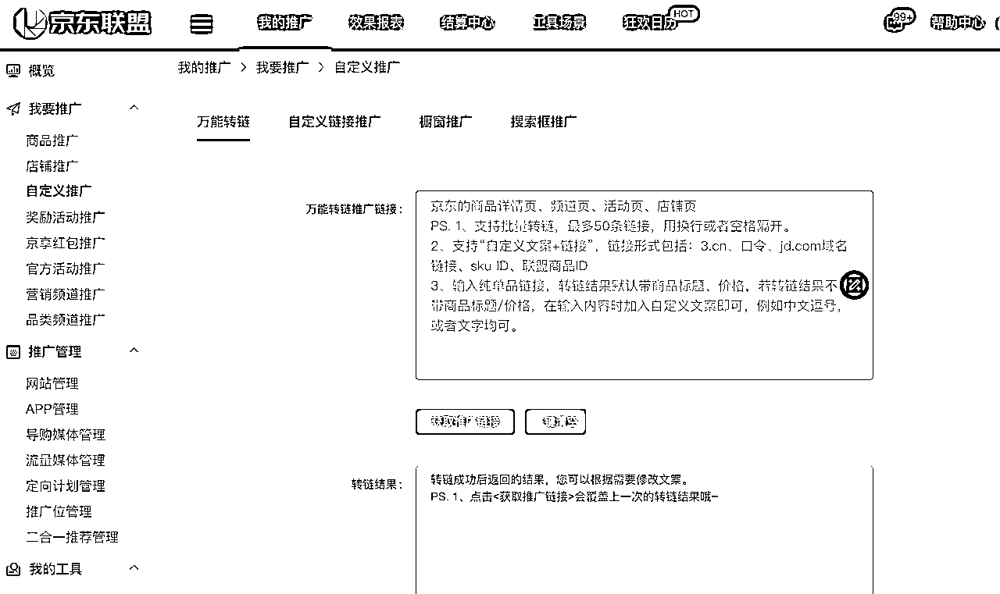
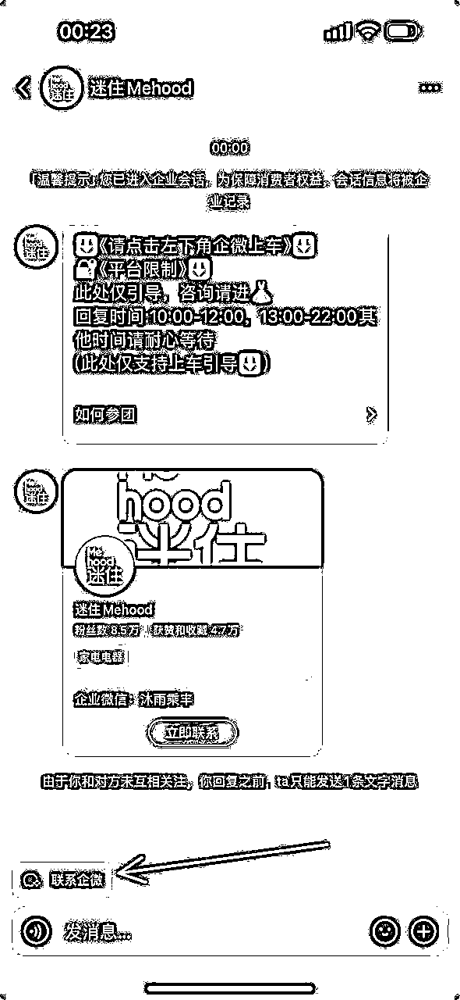

来源：https://yltzksi0dk.feishu.cn/docx/Ztjkd8ArFohYVqxCx3VcvXuknkf
我是生财四年的圈友，坐标江苏南通，虽然身在国际家纺之都的南通，但是我还没做过家纺产品的电商，这些年也一直在做各种项目，三年前做车商的时候分享过一篇“类似于「豪车毒」的汽车代购项目怎么做，以及我是如何在抖音一个月卖 15 台车的？”的帖子https://scys.com/articleDetail/xq_topic/415542852225428。现在新车价格真的太透明了，而且银行车贷高息高返的政策也被叫停了，现在新车的利润相对以前确实少了，这里我想插一句，最近我又了解到一些以前做二手车的朋友，现在在做2020年到2022年的二手车出口到俄罗斯，价格能翻一倍多。如果有做这个业务的小伙伴，可以链接一下。
做小红书家电团购这个项目也是因为身边有朋友正在做，而且也拿到了结果，所以就直接给了咨询费让其指导后进行了这个项目（吹个彩虹屁，生财航海的每一个项目单拎出来都能做，超过市面上99%的课程，“出去玩最重要的是出去，做项目做重要的是做！”关键看执行力）。
先讲下因为临近618人员数量上的配置，前端制作笔记6人，后端销售转化8人，从5月13号到7月3号，进粉16893人，5月13号到6月18号期间的GMV预计是7988307，预估佣金731801，毛利佣金479956，投流接近40万。
是不是乍一听感觉单兵作战做不了？其实有同行以前是纯做自然流笔记走的通用佣金的模式，单人单月一对一单聊也能做到2-4万的佣金利润。这个项目单人其实也能做的，虽然说增加了一个销售转化的过程，但是这也能增加我们的私域用户，而且平台的活动节点也是很多的，可以全年根据活动节点发布线报笔记（年货节，38女神节，520，618，七夕节，中秋，国庆，双十一，双十二，双旦），属于全年都可以去做的长期项目，下面我会分享这个项目是怎么去做的。
年轻群体主导“网购一个家”风潮，这些用户购买家电前会搜索小红书攻略，用户会首选小红书分享家电内容，小红书话题 #新家的100个快递 的笔记量超164万篇。另外政策红利持续就是国家“以旧换新”的补贴。
那么我们现在做的小红书家电团购，就是在小红书发布家电产品的笔记，让用户主动加企业微信，然后根据用户要买的产品，把用户拉到对应的产品团购群里点击链接下单成交，通过京东联盟、淘宝联盟等分销链接赚取佣金。用户的下单平台目前就是 XX京东自营旗舰店，XX京东旗舰店，XX天猫官方旗舰店。
简单来说就是两步“ 前端制作笔记投流，后端群内销售转化”
接下来我只讲小红书笔记制作的部分，重点讲后端销售转化的部分。关于小红书聚光投放，这里需要拿出往前航海小红书聚光投放实战手册https://scys.com/view/docx/LN6mdIojhoDqzSx8xzZcCBtCnjd
【这一步必做】电脑网页版下载安装两个插件：京推推，多兔淘客助手。可以在网页端直观查询通用佣金，优惠券，库存。
下载解压安装两个插件之后，解压包不要删，不要删，不要删，删了网页版的插件就没了，因为我就遇到过这个情况。
⬇️熟悉使用京东联盟，淘宝联盟的转链功能，因为品牌方给的链接都是白链。

制作笔记最简单的方法最有效的途径是“对标”，先模仿，后创新。小红书直接搜：家电团，就看有“广告”两个字的笔记，就是同行发的笔记，点击主页看他们的账号是怎么搭建的你就照着来。比如可以参考：迷瞪团，幻零团，核桃团，等等
几乎都是三步就加到企业微信，如下图。

【前端引流贴的注意事项】
如果是已经跟品牌方有和定向佣金合作的前提下，要根据品牌方的要求发笔记，发的笔记内容不能破价，品牌方会查，严重的就会停止合作，那么定向佣金就没了。
下面简单说下：账号搭建，素材制作方向
补贴力度大，画面标题吸睛
补贴吸睛，紧迫营销刺激消费
VS对比主题明确，引发讨论，黄色标题吸睛，场景真实可靠
关注研究几个家电对标账号，简介可直接复制修改对标账号的简介内容，小红书不能直接放微信。
不要原封不动搬运他人素材易限流，必须进行改动。其实最好用实拍图，实拍图去哪里找呢，可以去找淘宝评论区或者京东评论区直接找。
京东APP：办理PLUS会员，自己测价格、晒到手价截图。用美图秀秀或者可画作图。模仿标杆账号从用户第三视角思维发布文案。
避免营销词、其他平台词（如“返现”用“返”+现金表情代替；“京东”用小狗头像+“东”代替）。
避免直接引流词（如“加微信”），用“看我主页置顶作品”引导。
日更：起号前期必须坚持每日更新
挖爆品：运营一段时间后，需有主推思路，侧重发布流量大、利润高的爆品。
企业微信要设置好话术，比如要设置好询问客户要买什么产品的话术，进群欢迎语的话术。
重点：如果有品牌商务，那就根据品牌商务给的优惠，整理优惠信息。
不要把商务发的产品政策直接发给用户，用户根本看不懂，要自己整理成竖图，方便用户手机直接看，
（例如下图是品牌发的产品政策表，用户在手机端是不方便查看的）
如果没有品牌商务，那就多加同行群，搜罗优惠信息和优惠券为自己所用。
接下来以扫地机器人为例讲一下开团流程：
热门型号需要有实拍图，可以在小红书找；热门产品对比图，以及宣传文案可以找店铺客服要，价格表可以找商务要初版（跟团权益）然后自己核对，页面价-（店铺优惠券（京东用插件京推推查看）+平台会员劵+国补）=付款价-跟团返现=到手价
群公告需要有下单步骤，产品链接，注意事项
提前整理相应型号的下单链接（白链）和提前做好定向链接（转链），因为有些产品是在会场下单，有些就是直接定向链接下单，然后整理出下单步骤。
我们在此基础上还录制了下单视频，一个手机拍另一个手机的下单步骤。
群欢迎语：
🔥欢迎 来到【5月石头扫地机器人&XX团】国补专场
【热门型号到手价】
⭐P20 Pro水箱版💰K
⭐P20 Pro上下水版💰K
⭐P20 Ultra水箱版💰K
⭐P20 Ultra上下水版💰K
⭐P20 Plus水箱版💰2.7K
⭐P20 Plus上下水版💰K
👇👇下方为价格图，下单须知咨询群内客服/查看群公告～
（借用幻零团的示例）
改进方案：后来我们发现同行几乎所有的团在群里发的都是横屏，这非常影响用户在手机端的浏览，所以我们就做了竖图。
【接龙文案需要有下单步骤+注意事项+示例】
接龙文案：
🎉石头地机机器人限时活动~
‼ 必须通过我们的链接下单，禁止用返利，e卡，小红包等，不然影响返现
⚠下单一定要联系客服：报暗号【XXX】 (超过几小时没备注无赠品!)
【下单步骤】
① 85折国补可发全国，下单立减
② 点击群公告下单链接跳转到京东app下单
③ 复制单号参与接龙自助查询订单，查询不到订单无后返
——————
👉订单查询链接：XXXXX
微信昵称+订单号+型号
拿到跟团政策后，进行拆解，分为店铺部分+团长部分
赠品的领取形式，返现的发放形式，需要和店铺客服以及商务确认
赠品联系店铺客服报暗号，确定是随机器一起发出，还是收货后X天内发出，
店铺的返现部分发放形式，也需要与店铺到京东余额、退回付款
如果没有开团可以不设置群欢迎语，引导用户群内讨论产品的使用体验，发产品对比图以及热门型号的宣传文案，科普什么是跟团？用户能得到什么！
QA、都是自己在京东/淘宝下单，跟团是有额外赠品+返现，和自己购买唯一的区别是，多点步骤，有额外的赠品和返现，其他都一样
核心:活跃群氛围，自己的微信假扮用户，或者寻找热心客户（话痨且无攻击性)，科普下单流程及可能遇到的问题
水军，提前活跃气氛，设置群公告，改群名，发价格表，下单方式，介绍活动详情（跟团权益），发接龙，发产品介绍/对比图。活动预告
使用私人号进群演戏，活跃群氛围，比较活跃的用户可以聊的深一点，会在群里帮忙解答其他顾客问题，活跃群氛围
活动结束每天和最后一天要发布文案催单，可以在同行群内找
价格方面，（强调跟团权益，不要让客户认为是在我们手上买的，都是自己在京东/淘宝下单，有平台背书）
跟团 主要是有返现+额外赠品；主要看参团权益，618期间价格变动较快，以自己下单页面为准！群里的表没更新！
不管付款价多少，跟团权益是不变的，叠加品牌活动优惠券、店铺优惠券以及店铺赠品都是额外的，不冲突！
国补问题，（先咨询店铺客服，当地如果没有国补可以转寄）
不支持国补的地区，可以先把地址改到有国补的地区，到货后（显示快递员联系方式后）联系快递员帮忙转寄，
不是特别偏远的地区的话，转寄费一般是40左右。（如果店铺不支持就自己承担）确认收货后 直接贴运费单给店铺客服返现（最多100）
为什么要30天后，会不会不给返现
因为是和品牌方合作的，品牌方给我们要求是这样，而且都是和京东平台签协议的，京东也对我们有验资的所以放心
其他品台价格更低
我们都是京东/天猫自下单，品牌方都是严格控价的，能保证售后和品控。
没有查到订单
先提醒用户检查是否使用小红包/小额优惠券，截图发我，（配上需要的图片示例）；确认用户是否按教程操作（是否跳转APP）；仍然不成功，被骗子的风险链接锁号了，需要使用家人账号操作。
发截团公告，发后续福利领取方式，修改进群方式改为仅邀请。
以下几乎为固定模板：
💕感谢大家的支持和信任 ,本次团购圆满结束啦！撒花🎉~
🔔【特别注意！划重点！】
‼下单后一定要记得在群里接龙订单编号核对哦～
不接龙订单编号的话，就享受不到本次团购活动啦，千万不要忘记呀！
‼参团活动的价格政策以实际下单时间为准，如果有不清楚的地方，可以随时 @群内团长帮你确认～
关于店铺赠品、晒单等活动，下单后直接戳店铺客服咨询即可，他们会给你详细解答～
📦【关于发货】
✅ 不囤货订单，店铺和平台的正常流程安排发货，到货前物流师傅一般会提前打电话联系你，记得保持电话畅通，做好收货准备～
✅ 收到包裹后，第一时间拆箱验货！！一定要仔细验货👀！！如果发现有任何运损，别慌！马上联系店铺客服处理，他们会帮你解决的～
【关于售后】
收到产品后，有任何售后问题都不用担心！直接联系店铺或平台客服，专业的售后团队会耐心为你处理～
质保、退换、售后、保价等政策都以店铺规则为准，下单后记得第一时间查看商品详情页，或者直接问店铺客服确认～
【团购售后 / 返现联系途径】
淘宝用户：收货没问题的话，记得点【确认收货】呀～点确认收货 30 天后，联系群内客服或你已经添加的团购客服处理返现哦～
京东用户：同样在收货没问题后，等 30天（可以在订单物流详情里查看收货时间），联系群内客服或私信团购客服～
【客服在线时间】
团购客服实时在线时间（周一至周五9：30—18：30）
节假日及周末回复时间慢，敬请谅解哦
最后，希望大家都能开开心心收到心仪的产品，生活顺顺利利～
咱们下期团购再见啦，拜拜~
在刚开始做的时候，因为没有用户体量，所以可能拿不到好的佣金点位和跟团赠品。
【佣金点位】：
1.通用佣金：
如果在没有定向佣金的情况下，同型号的产品，在京东或者淘宝不同店铺的佣金不一样，这个要自己转链整理成自己的。
2.定向佣金：
①品牌方直接会给开定向佣金；
②跟市面上的大一点的代理合作，比如大代理的佣金是10%，他们可能往下放是8%，他们就赚2%，这样的大一点的代理有 什么值得买 这样的平台，还有其他哪些平台欢迎大家补充。
【跟团赠品】：
如果你没有商务合作领取赠品，那就直接拿别的团的暗号去领取赠品，这里还是上面说过的是要多加其他团，整理信息为自己所用。跟团赠品一般是下单后直接给店铺客服报暗号就可以有赠品，比如报“迷瞪团”，比如报“HL团”。客服一般回复就是“已备注”，其实很多赠品都是在用户收到货之后，客服让用户在评论区晒单之后寄出的。
做好各种信息的搜集和整理，要熟悉你卖的产品型号，哪些是热门款爆款都要了解清楚，有些用户是在线下店看过的，他可能加上你之后给你报的是线下款的型号。
【质保问题】：
直接问店铺客服，整理成自己的。质保XX年，享受平台七天无理由，xxx天只换不修服务。您可以放心下单哦。有问题后续直接联系店铺客服或者官方售后400电话都可以的哈，我们也会配合您处理售后。
【价格问题】：
提前整理好话术，比如关于用户对于闲鱼，拼多多等平台价格对比的回答。
闲鱼买的家电是没有联保的，而且之前闲鱼到手刀，真假掉包事件还挺多，出事了账号换一个就行，到时候哭都没地方找。
其实每个家电团的价格相差都不多，并且在原价上都已经有了很大的优惠了，我们团更注重的是服务和品质还有售后保障您的体验感，买的放心，省心，舒心。我们参团产品也是覆盖家电家居的方方面面，产品也非常全面，各个品类都有很多大品牌与我们有合作。体量完全值得您信任。
拼多多是保真不保新的，好多产品都标了正品。但是没有标注全新正品。基本就是瑕疵机器，返修过的。而且有的干脆就是旧款尾货库存的机器。一般谁也不建议在拼多多买大件东西，日常买点垃圾袋小东西啥的倒是很香。
【以旧换新优惠券 】这是一个隐形优惠券
用户为什么要找你下单呢？就是因为从你这儿下单比他自己下单便宜，而且是有返佣的
那么这个便宜是从哪儿来的呢？一个就是品牌方给的优惠券，另一个就是这个以旧换新的优惠券。
所以要提前测这个产品有没有以旧换新的优惠券，有的话就整理好。用这个以旧换新不是真的要回收旧物，主要是为了卡这个优惠券。
如果有旧物可以按照这个流程回收；如果没有旧物也能享受这个优惠券，用户下单之后30分钟内把旧物取消。
在选择旧物的时候不同产品有不同的分类，1️⃣【厨房小电】， 2️⃣【平板电脑】【手机】， 3️⃣自己本身有旧物
1️⃣有【厨房小电】选项就选小家电，①选小家电-煮蛋器-其他（显示无残值待处置）大部分地区不回收。
2️⃣有【平板电脑】【手机】选项就可以选小米手机或者小米平板，选择的手机或者平板价格不能低于100元，也不要高于产品的价格，用户下单后再教他怎么取消回收单 （30分钟内），超过30分钟就需要找回收客服取消回收了。
3️⃣自己本身有旧物需要回收就直接选择，比如本来有个旧油烟机需要回收。
⬇️用户下单通过你的短链下单之后再把以下步骤发给用户
【专属优惠券】
品牌商务给的专属优惠券，一般都是长链接，需要把长链接转为短链接，这样方便整理好后发到群里。这里用到的工具就是一个公众号“短链接”，以前是免费的，现在要看广告后使用。
（长链转短链）
【暗券】
这个暗券一般是 京东的运营 有权限能给到，有的是跟上方一样的优惠券的形式，有的是兑换码的形式需要在京东app里兑换后使用。这个暗券一般接触不到。我也是潜伏在其他家电团的时候看到之后然后问品牌方这个券为什么没有给我这个券，品牌方才告诉我是京东运营给的。如果遇到这种情况，可以让品牌方推你这个京东运营，你要知道这个运营也是有销量的业绩要求的。
【随机优惠券】
要跟用户强调是随机的，并不是每个人都有。可以把以下话术发给用户。
🧧京东家电95折券领券攻略：
👉1、浏览客单价超过3000+的家电，洗衣机冰箱电视都可以，最好是上万的，多浏览几家店铺
👉2、加入购物车，不要一下加太多，让平台系统稽查觉得你是诚心买，购物车界面停留久一点，再提交付款然后关闭订单，去客服界面咨询下单的商品（咨询内容随意），然后退出京东APP
👉3、重新进入京东APP，首页，购物车等页面停留久一些，差不多就可以获取到券
【延迟发货】
提前联系好店铺客服，是否可以延迟？延迟多久？怎么操作？
【国家补贴】
【国补支付方式】不同地区的国补支付方式不一样，云闪付或者京东支付。
云闪付App注册手机号、实名人要和京东App保持一致。
其中空调每个人可以用3次国补，其余类目只能用1次，可以让亲朋好友帮忙下。
一次不要下单多个商品，如果每个商品可以用一次国补，那就领一次国补下一次单。
我也遇到过有客户实在不会领国补下单，我是直接给客户打微信语音的，首先我会语音教用户怎么下单，如果还是不行，我就会跟用户说 我通过短信验证码登录你的京东帮你下单到代付款，遇到的用户相信我的就直接让我帮他操作下单。
【国补取消】
如果用户在其他渠道领取过国补，需要先在其他渠道解绑，再在下单的平台领取。
需要告知用户取消的方法。
下单步骤指导：明确指令，指导用户的每一步下单操作。准备好下单步骤的视频，不要使用录屏，要用一个手机录制另一个手机，要录到你的手操作的每一步的下单步骤，这样更直观，减少用户的操作失误。
产品的政策图，用竖图，强化最终到手价的展示。
群内氛围的营造，要丢一些线报到群里，不是纯发广告，模拟用户角色，增加群内互动，保持群的活跃度，定期提醒用户团购信息。开团之前，可以先在群里统计大家需要买的型号，然后可以根据已知的用户需求，结合品牌方给的产品政策做出用户更想下单的团购方案。
经常会遇到很多发广告的到群里直接发“京东大额红包”的广告，这些要告知用户不能点，因为用户点了这些广告链接，可能就锁不上你的链接了，那么你就赚不到他的佣金了。简单的话术：" ⚠风险链接勿点，谨防财产损失⚠ 近期很多不法分子打着领大额的名义，在群里散布风险链接。 ⚠各位小伙伴切记，非我团工作人员发出的链接，谨慎点击，谨防财产损失‼！
客户问题的解决，虽然说专业的问题应该转交给店铺的客服，但是在用户咨询客服后，有可能用户就会被店铺客服转化下单了。如果能做到个性化服务，那就单聊解决复杂问题。
客户需求跟进，询问是否还有其他购买需求，已经下单的用户二次转化更高。
新人如果要做这个小红书家电团购，先进几个同行群，你现在作为用户去体验一下整个流程，看看同行是怎么做的，借鉴优化。可以结合B站好物一起做，本质上都是赚取佣金嘛。
封号风险，一个微信号每天不能加太多好友。
团里不要一次性发太多产品链接，精准找到客户所需型号。
告知下单时候不要叠加小额优惠券或者小额红包， 否则可能无法使用国补也会导致跟团失败。
国补用不了一般有以下情况
1.未在京东APP进行下单，可能是在微信版的京东进行操作；
2.使用国补以后订单进行了退款操作，一般隔天国补才退回。
新人就发笔记做自然流，至于是单聊还是建群，没有量的时候就单聊。想要做群聊，那就得有小号做托在群里营造氛围带节奏。尽量能做到及时回复，用户不止加了你的团，有可能还加了其他的团。
选品别贪多，不要选冷门品牌，目前GMV中最高的就是石头扫地机器人，那石头扫地机人为什么卖的好？因为这个品牌本身它自己就投入了很多广告费在各渠道做广告，用户心智已经建立了，接下来用户要做的就是去看攻略看使用反馈搜怎么买能便宜。这个项目是需要时间投入，长期项目，可以先小步跑，一点点来做。
我们是把返现时间定在用户确认收货后的30天，这样避免有的用户短时间买了之后就退货，避免被薅羊毛。
用户主动来要返现的时候，一定要再次核实订单号是否是从你的定向链接下单的，避免被白嫖。
最后，借用涛哥说的一句话--“不要总想着去找源头工厂”，有量才有好价格，我们刚开始做小红书家电团或者是刚开始做B站好物的时候，因为我们没有量，所以刚开始做的时候没有必要执着于去找后端的供应链，等我们做的过程中自然会有供应链主动找上门的。
以上就是我对这个项目的实操和复盘分享，感兴趣的欢迎在评论区一起交流呀。